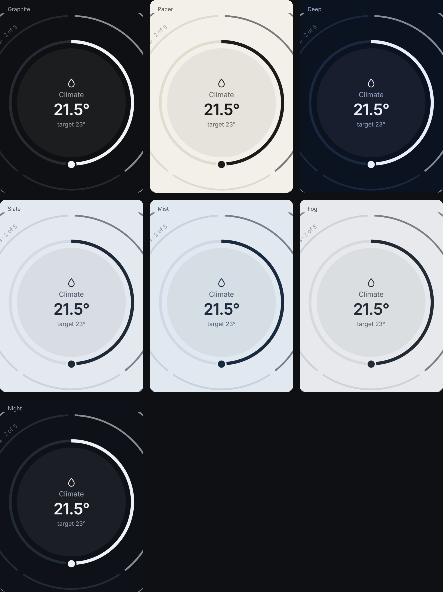

In use
In your project
Pulse is a set of primitives and a grammar, not a widget with a config file. You describe your systems as data, write the function that turns your state into readings, and mount the views. The demo app in the repository, apps/demo/, is the smallest complete example; this page walks through it.
1. Install and import
The core is @zumer/pulse, with Orbit and Zumly as peer dependencies. It is not on npm yet: today it lives in the repository's workspace, and a project starts from a clone of it. Four imports bring the styles and the runtimes, then the primitives.
import Zumly, { type ViewContext } from 'zumly';
import 'zumly/style.css';
import '@zumer/orbit/style';
import '@zumer/orbit';
import '@zumer/pulse/style.css';
import { ring, face, backLayer, layerIndex, calmStrip, dialControls,
zumlyOptions, startInside, SIZE, STROKE, LANE, PHONE, t } from '@zumer/pulse';The page needs one element to mount on: a shell that fills the viewport and the Zumly canvas inside it.
<div class="shell"><div id="canvas" class="zumly-canvas"></div></div>2. Describe your systems as data
A system is a title and two to four channels that compete for attention, ordered front to back. A channel has a name, a glyph, a kind, a level (1 minor, 2 critical), and what it looks like when calm and when it calls. Whatever your shape, keep it plain data: a new system is only a new entry.
const car = {
title: 'Car', front: ['battery', 'tires'],
ch: {
battery: { name: 'Battery', glyph: bolt, type: 'p', level: 1,
ok: { v: 0.74, big: '74%', label: '310 km' },
al: { v: 0.12, big: '12%', label: '45 km', why: 'Not enough charge for tomorrow', verb: 'Schedule charging' } },
tires: { name: 'Tires', glyph: disk, type: 's', segs: 4, level: 2,
ok: { on: 4, big: '32 psi', label: '4 of 4' },
al: { on: 4, seg: 2, big: '21 psi', label: 'rear left', why: 'Losing pressure', verb: 'Find a tire shop' } },
},
};3. Turn your state into readings
The object draws a RingReading per channel, plus what the face and the strip say. Write one function from your state to that: it is the only place that knows your data. The reading carries the ring's kind and value, the dial if the ring is a control, the segments with their labels and actions, and the alert if any.
function reading(id, key): RingReading & { big: string; label: string; alert?: Alert } {
const ch = systems[id].ch[key], alert = state[id].alerts.includes(key);
const base = alert ? ch.al : ch.ok;
return {
kind: ch.type, v: base.v,
segs: ch.type === 's' ? segmentsOf(ch, base) : undefined, // { label, on, act }
dial: ch.dial ? { ...ch.dial, value: valueOf(ch, base.v) } : undefined,
big: base.big, label: base.label,
alert: alert ? { level: ch.level, fail: failingSegment(ch, base), why: ch.al.why, verb: ch.al.verb } : undefined,
};
}Order is the grammar: alerts first, the most serious first; then the one the viewer tapped; then the usual order. A new alert cancels the viewer's choice.
function order(id) {
const alerts = state[id].alerts.sort((a, b) => level(b) - level(a));
const rest = systems[id].front.filter((c) => !alerts.includes(c));
if (!alerts.length && state[id].pick) rest.sort((a, b) => Number(b === state[id].pick) - Number(a === state[id].pick));
return [...alerts, ...rest];
}4. The system view
A Zumly view per system. systemShell gives the skeleton: the stage with the universe, the slot for the index, the strip, the footer. One layer per channel is created once; a repaint only changes data-depth, so Orbit animates the reorder. The front layer gets the ring with controls and the face; the ones behind, a ring and an arc label.
function system(ctx: ViewContext, id: string) {
const el = ctx.target;
el.innerHTML = systemShell(null, viewToggle());
const depth = el.querySelector('.depth')!, strip = el.querySelector('.strip')!;
const layers = new Map(systems[id].front.map((key) => {
const layer = document.createElement('div');
layer.className = 'gravity-spot layer'; layer.dataset.ch = key; depth.append(layer);
return [key, layer];
}));
const paint = () => {
const ord = order(id);
ord.forEach((key, i) => {
const layer = layers.get(key)!, ch = systems[id].ch[key], r = reading(id, key);
const d = Math.min(i, SIZE.length - 1), grow = SIZE[d];
layer.hidden = i >= SIZE.length; // past the cap: named, not drawn
layer.dataset.depth = String(d);
layer.classList.toggle('layer-front', i === 0);
layer.classList.toggle('is-alert', !!r.alert);
layer.dataset.level = String(ch.level);
layer.innerHTML = ring(key, r, STROKE[d] / grow / LANE, { name: ch.name, controls: i === 0, call: !!r.alert })
+ (i === 0
? face({ glyph: ch.glyph, name: ch.name, big: r.big, label: r.label, aria: ch.name,
to: detailAdds(r) ? 'detail' : undefined, props: { system: id, channel: key } })
: backLayer({ text: `${ch.name} · ${r.big}`, at: labelAt(i), grow, stroke: STROKE[d], hit: 12,
pick: { attr: 'data-pick', value: key, aria: t.bringToFront(ch.name) } }));
});
el.querySelector('.layer-index-slot')!.innerHTML = layerIndex(ord.map((key, i) => ({
id: key, title: systems[id].ch[key].name, big: reading(id, key).big,
level: reading(id, key).alert?.level ?? 0, off: i >= SIZE.length })), 'data-pick');
const front = reading(id, ord[0]);
strip.innerHTML = front.alert
? `<strong>${name}:</strong> ${front.alert.why}. <button class="primary" data-resolve="${ord[0]}">${front.alert.verb}</button>`
: calmStrip(systems[id].title, name, ord.slice(SIZE.length).map((k) => ({ key: k, name: systems[id].ch[k].name })));
};
paint();
}The stage sizes the object to what it has: observe the stage and set --fit from fitFor(width, height, alert). The strip under the object is the only place for text that is not on the object itself.
5. Controls
Taps arrive as data attributes: data-pick on a ring behind or an index item brings that layer forward; data-seg on a segment toggles it; data-resolve on the strip's button resolves the alert. After a layer change, lock the controls for LOCK_MS so a nervous second tap does nothing. The dial is wired once per view with dialControls; it updates the ring in place, since a repaint would recreate the band and cut the drag.
ctx.onCleanup(dialControls(el, {
locked: () => locked,
ringOf: (key) => layers.get(key)?.querySelector('.orbit-12') ?? null,
current: (key) => reading(id, key).v ?? 0, // fraction 0..1
stepOf: (key) => { const d = dialOf(key); return d.step / (d.max - d.min); },
set: (key, v) => { send(key, v); updateRingInPlace(key, v); },
activate: 'o-arc[data-pick], o-arc[data-seg]', // Enter and Space on these
}));What is shown is what was confirmed. While a command is on its way, pass pending to ring and the band beats; when the source reports the new state, repaint. If the command is refused, pass failed: the control keeps a red outline and the strip gets a Retry.
6. The board and the detail
The board is one more view: a tile per system with its front ring small, each tile a Zumly trigger (.zoom-me[data-to="sys-car"][data-system="car"]). The detail is a view that receives the system and the channel as props, and exists only when it adds something the face does not have: a day, a picture, a long list, a month. Then mount.
const app = new Zumly(zumlyOptions({
board, detail,
...Object.fromEntries(ids.map((id) => [`sys-${id}`, (ctx) => system(ctx, id)])),
}, 'board'));
app.on('afterZoomOut', () => repaintAll()); // the views behind do not re-render on their own
await app.init();
if (PHONE) await startInside(app, mostUrgent()); // a phone starts inside a systemzumlyOptions carries the decisions of the grammar: 800 ms with an ease-out, the back button named after where it goes, pinch and follow, never the wheel, and on a phone the lateral swipe between systems.
7. Keep a source
Put your data behind one interface, so the views never talk to a device or a server directly. The Home Assistant app's PulseSource is a good shape to copy.
| Member | What it is |
|---|---|
states | A map of entity id to state, with attributes |
onChange(fn) | Called with the ids that changed; the views repaint |
call(command) | Sends a command; resolves when accepted, rejects when refused |
status, onStatus(fn) | Live, offline, error; the board says so |
language, stateText(e) | The user's language for numbers and times; a state's text in it |
history(id, hours) | Optional: hourly means, for the time ring |
changes(ids, hours) | Optional: state changes, for the timeline |
statistics(id) | Optional: a value per day, for the month ring |
stream(id) | Optional: a live picture, for a camera's face |
Three implementations exist in the repository: over Home Assistant's WebSocket, over the hass object of a card, and over the demo homes, which answer commands in the browser. A fourth would be yours.
8. Theme
The look is seven custom properties on :root (and :host, for a shadow root). The stylesheet is Graphite. The core ships seven themes in THEMES: Graphite, Paper and Deep tell an alert by hue, amber and red; Slate, Mist and Fog (light) and Night (dark) keep to one blue-grey family and tell it by tone, the most urgent the deepest (the brightest on Night). applyTheme(el, 'slate') puts one on an element and everything inside follows. Another theme is another set of seven. Everything else, strokes, sizes, motion, is the grammar and does not change with the theme.
:root {
color-scheme: dark;
--bg: #0e1013; /* the page and the discs' ground */
--ink: #f2f3f5; /* text, the front ring, the knob */
--muted: #9aa0a8; /* labels, the rings behind */
--dim: #3a3f47; /* tracks, what is off */
--line: #262a31; /* borders */
--minor: #ffb020; /* a level 1 alert */
--critical: #ff5a4f; /* a level 2 alert */
}
9. Strings and language
The object's own words live in the core's dictionary, t; an app spreads it and adds its own. Numbers and times follow the locale set with setLocale(tag), which a source reports. Another language is another dictionary with the same keys.
import { t as core, setLocale } from '@zumer/pulse';
export const t = { ...core, allCalm: 'All calm, unless something calls.' };
setLocale(source.language);10. Inside a shadow root
A custom element, like the Home Assistant card, mounts the same views on its own canvas: adopt the four stylesheets in the shadow root, keep the tokens on :host, and pass the mount element to zumlyOptions(views, 'board', canvas). Orbit registers its properties itself; nothing else is needed. The card's source is apps/home-assistant/card/.
On a phone
PHONE is decided on load. Two layers instead of three, less growth, the systems as dots under the object, a lateral swipe between them, and the one calling the most opens first. Set touch-action: pan-y on the view so the browser leaves the horizontal gesture to Zumly.